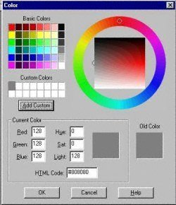
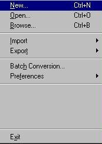
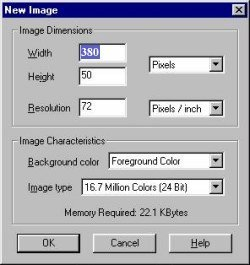
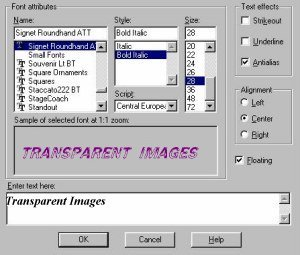
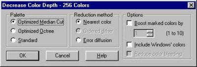
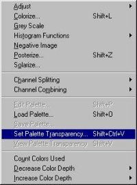
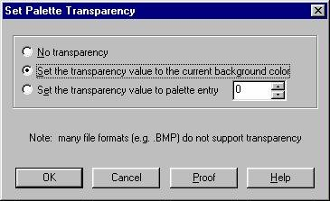
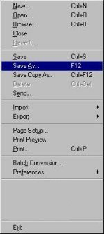

This is my first tutorial page.I decided to make this page to help those (including myself) with the common question about how to create transparent background images using PSP 5.03. I do sometimes forget some of the most simplest things.We will do this in Steps. There are 7 Steps in creating a Transparent Background Images. If some of you do not know what I am referring to. Take a look at the above image. That banner can be placed on different colored backgrounds and will still look as it does above. STEP ONE Set Your Background color on
the color palette to light Gray or dark gray. (Please Note: If the image you are creating
is to be placed on a light colored background choose light gray or a dark gray for darker
colored backgrounds)  STEP TWO Create your new image  STEP THREE You can select whatever size you would like your image to be but be sure to choose foreground color and the other settings shown in the example below.  STEP FOUR If you want to have text writing in your Image you can do so now. Or whatever else you would like to add to your newly created image.  STEP FIVE Now when you are finished creating your New Image.Click on Colors Decrease Color Depth/256 colors (8 Bit). The Example below shows the settings you should select . Click OK.  STEP SIX Now go to Colors/Set Palette Transparency. A box will pop up as shown below. Be Sure to use the settings as shown in the Example.   STEP SEVEN This is the last step. Be sure to "Save As" in gif format. Do not save the image as a jpg as it will no longer be transparent.. You will not be able to see the Background transparency unless you click on Choose Colors/View Palette Transparency.  I Hope This tutorial helps explain some of the basics to making a background transparent. There are other ways to doing this. But I have tried to pick the simplest explanation I know how. I will be adding links to other sites showing different ways in making Transparent Background Images. Tutorial Page-(Mirrored Backgrounds) Silver Mist Graphique Tutorial Page-(Various Backgrounds) Web Graphics on a Budget
Click HERE to Return to Main Page
This page
last updated on.....
|